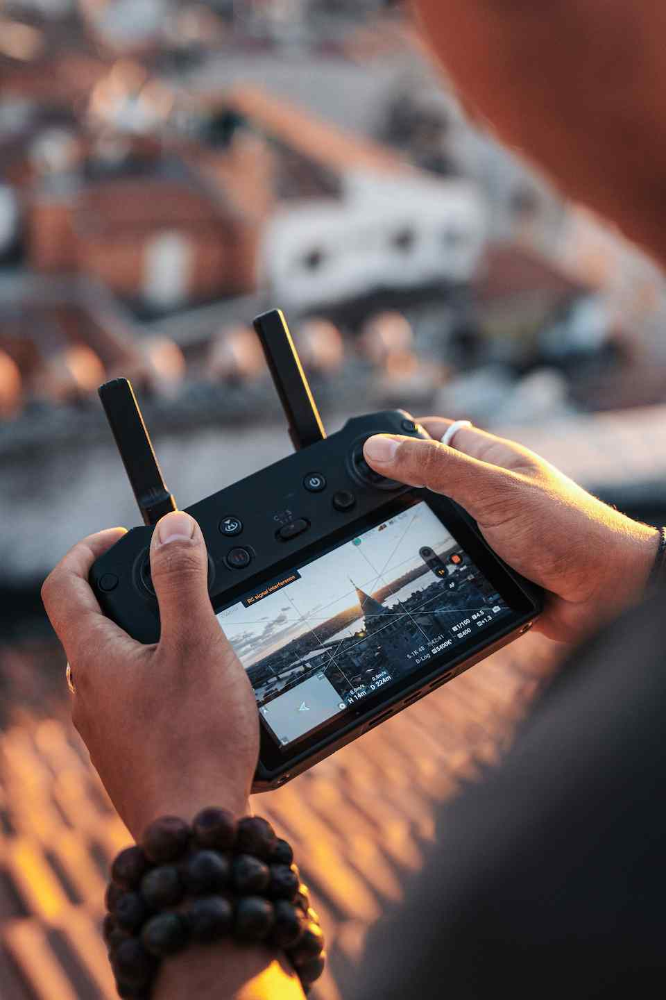
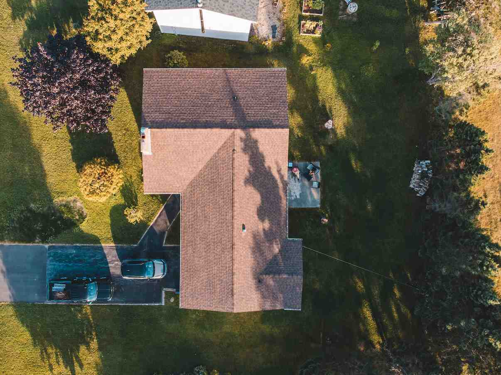
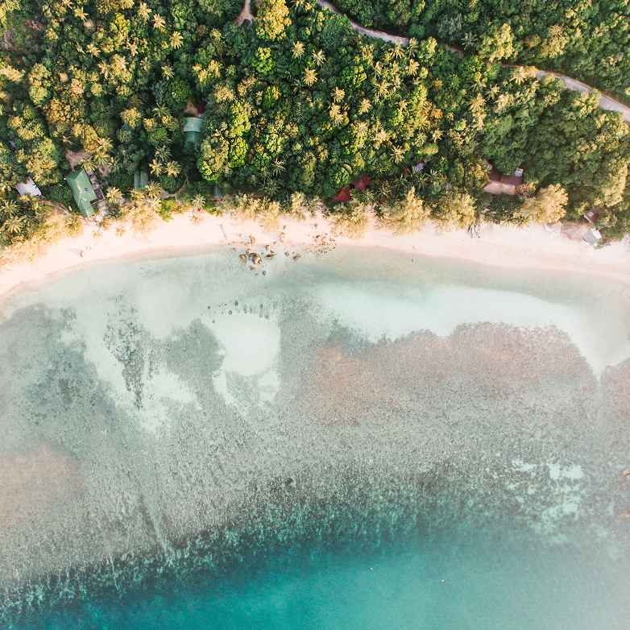
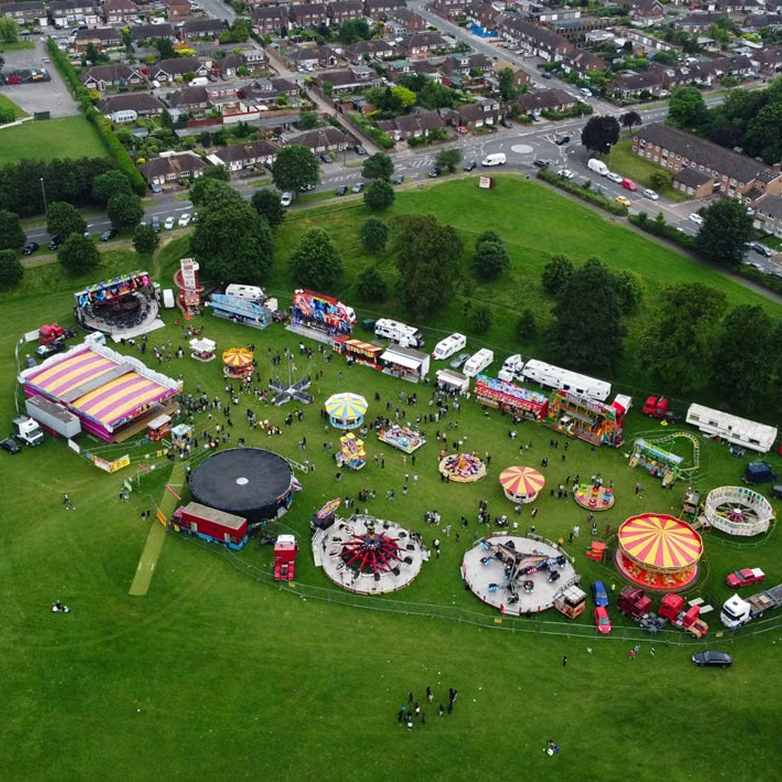
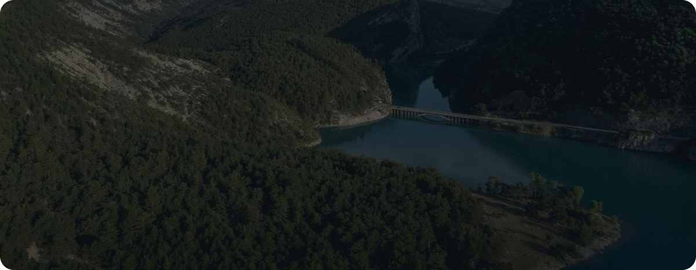

Fotografija iz zraka omogućuje da prostor sagledamo kao cjelinu i otkrijemo perspektive koje s tla nisu vidljive. Kroz pažljivo odabrane kadrove stvaramo fotografije koje naglašavaju lokaciju, arhitekturu, prirodu i odnos prostora prema njegovom okruženju.
Fotografiranje iz zraka nije samo pogled odozgo.
Pravi kadar može prikazati razmjere, istaknuti detalj ili stvoriti potpuno novu
percepciju poznate lokacije. Zato svakom fotografiranju pristupamo s ciljem da
pronađemo perspektivu koja najbolje odgovara projektu.
Prikaz lokacije, veličine objekta i njegovog odnosa s okruženjem.


Vizuali koji prenose ljepotu prostora i stvaraju želju za istraživanjem.
Bilježimo trenutke, energiju i razmjere događaja iz perspektive koja omogućuje da se vidi cijela priča.

